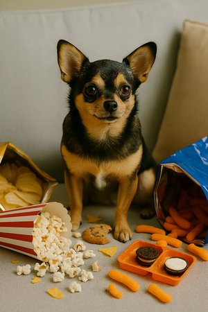
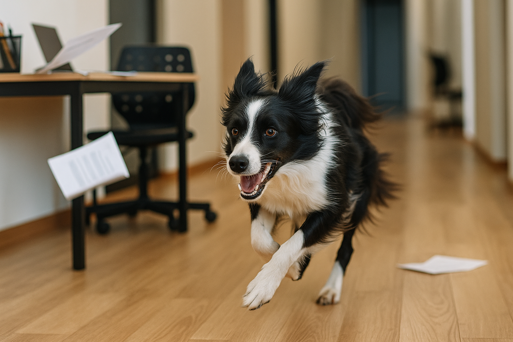

Funny Dog Jobs
Workplace Setup
Dogs with jobs? You bet. Not just service dogs or police pups—we’re talking career dogs with business cards, headshots, and an inflated sense of self-worth. This page is where you'll meet the Barkforce.
Pawffice Manager – Barley
Barley keeps the team on track mostly by wagging his tail encouragingly and nudging coworkers for belly rubs. He’s never sent a Slack message, but everyone still listens to him.
Chief Snack Officer – Mochi
Mochi is responsible for taste-testing every snack on-site. She takes her job very seriously and often “accidentally” eats other people's lunches. It’s fine—she’s in charge of snacks.
Lead Zoomie Strategist – Luna
Luna has engineered the perfect office route for maximum zoomie velocity. Her hallway sprints are inspirational and mildly terrifying.
Head of Barketing – Rusty
Rusty runs our social media presence with plenty of flair and howling commentary. His latest campaign, “Bark Like You Mean It,” got over 3 likes. Big success.

Team Benefits
All team members enjoy unlimited nap breaks, stock options in squeaky toys, paid paw-ternity leave, and at least one treat per hour.